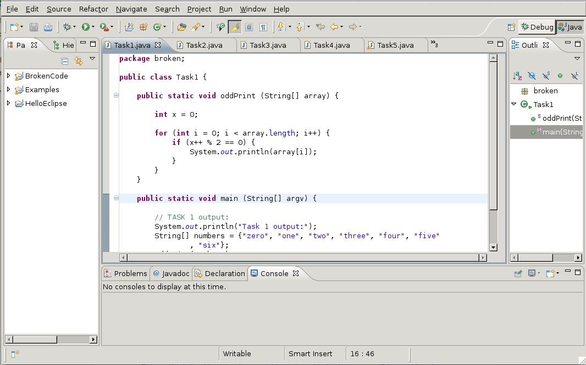
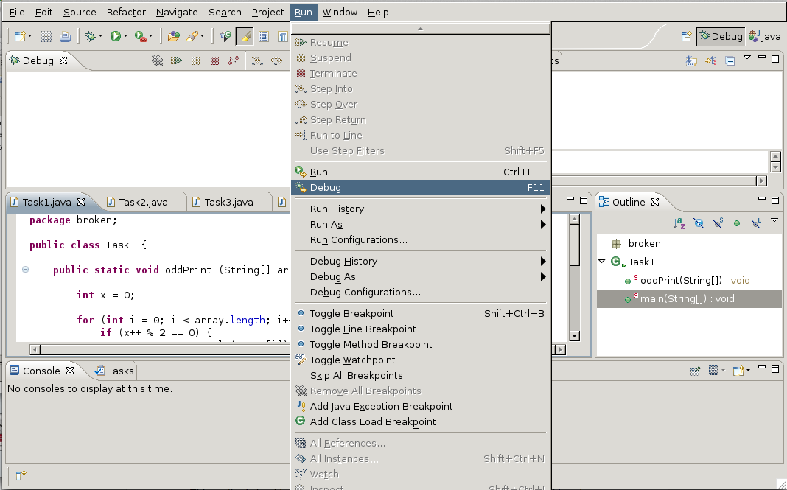
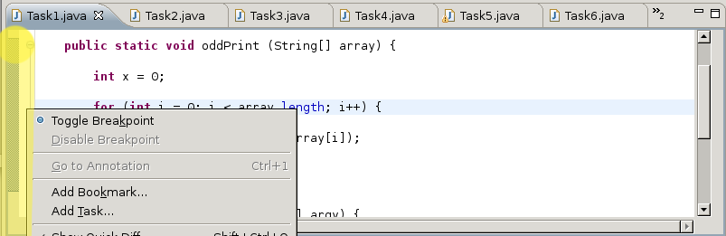
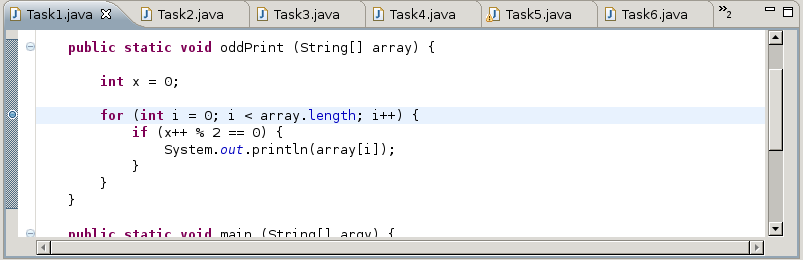
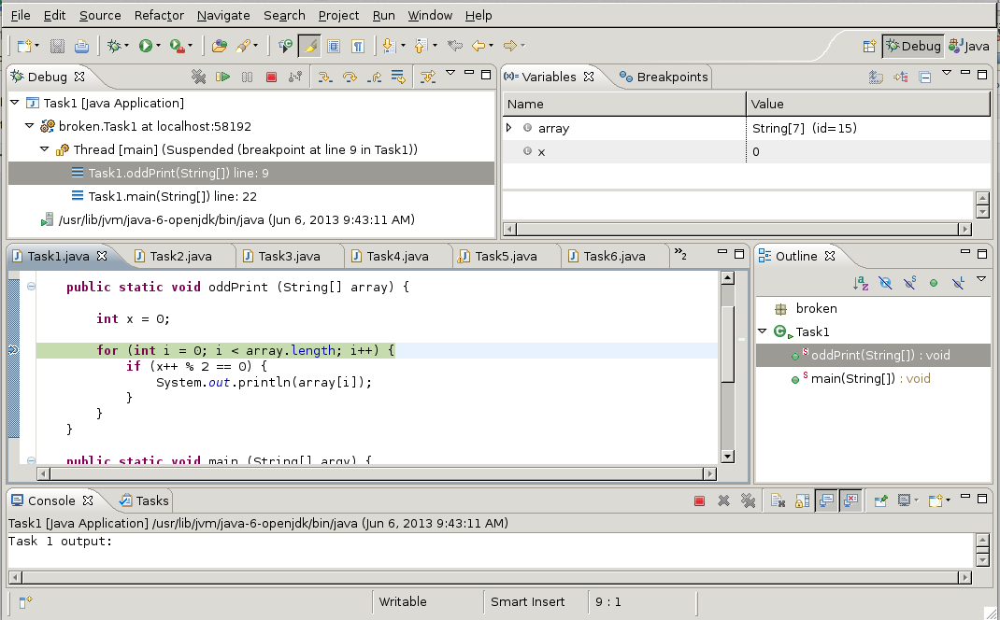
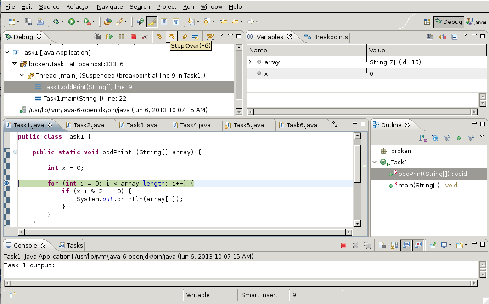
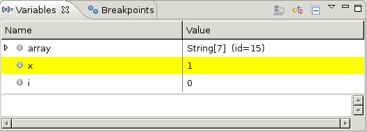
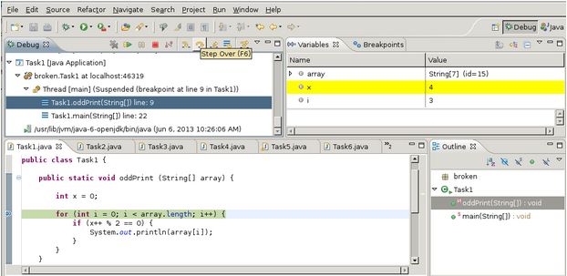
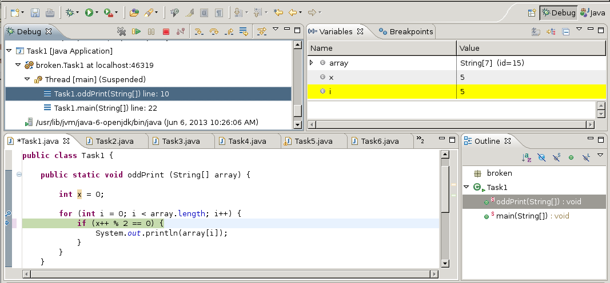

Unfortunately, as much as we would like to, sometimes we write code that is less than perfect. When that happens, we can spend more time trying to figure out what’s wrong than we actually spent writing the code itself. In order to make sure our code is working, we have to make sure it has no bugs.
- The best way to catch bugs is to not insert them in the first place, or to document your code sufficiently well that they become "obvious".
- Use preconditions and postconditions whenever possible. You may even find it useful to explicitly test both pre and postconditions in your code.
If you still end up producing non-working code, despite following the above conventions, then it’s time to debug your code. This can be done by simply looking at it and figuring out what’s wrong by testing it in many different ways, or using the built-in Eclipse Debugger.
There are some general things every debugger lets you do. You can:
The debugger will be useful for some of these tasks and not for others. It is up to your discretion to decide where to use it. Let’s do an exercise together, so you get a feeling of what it does. The example we’re using is one from the lab that corresponds to this reading.
Let’s take a look at Task1. We want it to print every String at an odd index in the array. When we run it, though, it seems to to exactly the opposite. Clearly there’s something wrong with our code and we need to fix it.
We can check what’s happening to every variable each time the loop executes by entering the Debug mode.

To enter Debug mode, either click on the Debug button in the top right corner or, if that’s hidden from view, click the box on its left and click Debug. You will be presented with this interface:

Here you can choose the class you want to debug and you run that class in Debug mode by going to > .
We want to check the line in our class that we think is messing up our program and set a Breakpoint there. This means that the debugger will tell us exactly what’s happening at that particular line of the code and won’t continue to execute the rest of the code unless we tell it to move on. Because we’ve established the error has to be in the for loop (there’s really not much else to the code), we’ll set our breakpoint on the for loop line. Of course the main method has to be executed as well, since it “runs” the method defined in our class. If we had more methods in our class, the only part of main that would be executed would be the part that pertains to the particular method we’re evaluating.
We set a breakpoint by right clicking or double clicking on the right of the class window. In the example the area is separated by a thin line (highlighted yellow in the example below).

We select Toggle Breakpoint.

And now we’ve set our breakpoint at the for loop. There’s a little blue dot at it. You can also see that the area that will be getting evaluated by the debugger is denoted by a blue line spanning from the method’s beginning to the end.
Now we can finally run the code in debugging mode.

A bunch of things happen at once here. The Debug window shows us that it’s running the code in this class, and that it starts at line 9 and ends at line 22. The main window with our class code shows the line we’re evaluating by highlighting it green. The window in the top right corner (Variables) shows us what’ happening to our variables when we run the method with the input we set in main:
System.out.println("Task 1 output:");
String[] numbers = {"zero", "one", "two", "three", "four", "five", "six"};
oddPrint(numbers);
The Variables window is the one that we actually want to watch. We want to see how x and i change with each loop. I Right now it only shows us that x = 0, because we haven’t executed a loop yet. We can do that by “Stepping into” the method.

Stepping over the method moves the debugger down one line - the if statement. We can see the variable i appeared under the Variables tab. Stepping into the method we can track what’s happening to both variables. So let’s do that a few more times to see what’ actually happening and why the method isn’t working. You can go to Step Over by clicking the button show above or going to > .
There’s other ways you could debug the code, like:
- Step Into: Goes through every line of the code one by one, does not go through every loop
- Step Out: If you’re stepping into every line, Step out skips over a function that you don’t want to evaluate
- Step Over: If the method you’re looking into is a loop, it will execute according to your input in the use of that method in main

You can see that the variables get highlighted yellow as we go through each line of the loop. This means the variable just changed. We keep stepping over the method and we notice a pattern.

We notice that x is one more than i when we enter the for loop.

When we enter the if statement, x == i. Clearly the method should be implemented in a way where when i is odd, i gets printed. Or in other words, when x is odd, i gets printed.
There are a few ways of how to do that. We could:
Change the remainder value:
if (x++ % 2 != 0)
or
if (x++ % 2 == 1)
Get rid of the x variable completely:
if (i % 2 != 0)
or
if (i % 2 == 1)
Use prefix incrementation on x:
if (++x % 2 == 0)